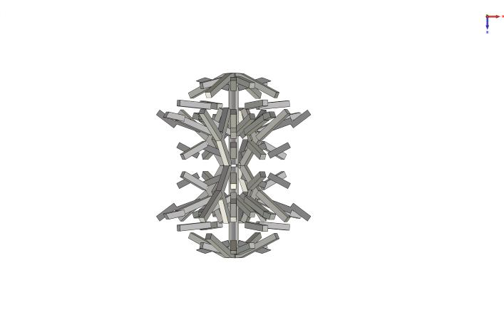
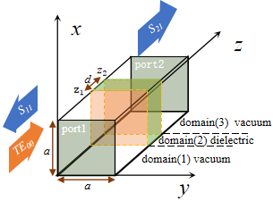
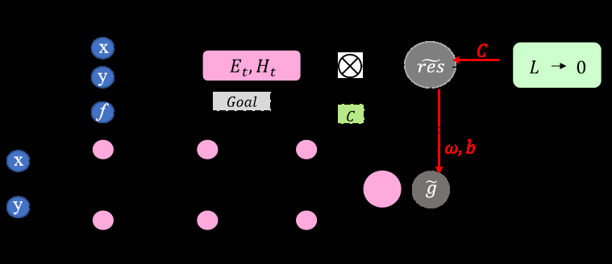
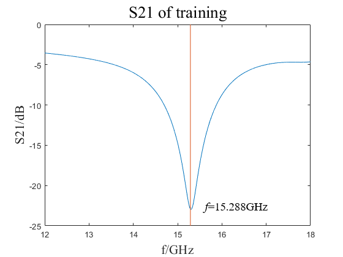

🔴 Laser
RF & AI Research Portfolio
Bridging Electromagnetics and Machine Learning
Click anywhere or use ↑↓ to navigate
1/21
About Me
Jimmy Liu
Senior AI Engineer | LLM Agent & RAG Specialist
📍 Location
Taipei, Taiwan
🎓 Education
M.S. AI Innovation, National Yang Ming Chiao Tung University
💼 Current
AI Architecture Engineer @ Homee.AI
🏢 Previous
MediaTek (EDA Software), Broadcom (Impedance Engineer)
Python
PyTorch
LangChain
LLM Fine-tuning
RAG Pipelines
2/21
Research Overview | 研究概覽
Three papers demonstrating RF + AI integration
研究主題
關鍵技術
天線類型
效能指標
設計方法分類
Paper 1 多目標進化算法 (MOEA/D)、Chu 極限引導分解策略、混合變量編碼、遺傳算法 (NSGA-II)
電小天線 (ESA)、「徑向微束」(Radial-beamlet) 天線
阻抗頻寬 \(50.3\%\) (\(2.05\)-\(3.43\text{ GHz}\))、實現增益 \(1.72\)-\(3.86\text{ dBi}\)、頻寬-效率乘積
\(0.402\) (超過極限 \(0.389\))
物理信息驅動與模型驅動
Paper 2 物理信息神經網絡 (PINN)、模式匹配法 (Mode Matching Method)、全連接神經網絡 (FCNN)、Adam 優化器
頻率選擇表面 (FSS)
設計目標頻率 \(15\text{ GHz}\)，實測值 \(15.288\text{ GHz}\)（誤差 \(1.92\%\)）；\(S_{21}\) 參數
物理信息驅動
Paper 3 GPT-2 主幹網絡、空間域預處理模組、雙向 LSTM (BiLSTM)、時空注意力機制、強化學習 (DRL)、圖神經網絡 (GNN)
可重構智能超表面天線 (RIMSA)
總和傳輸速率 (Sum Rate) 達 \(9.79\text{ bps/Hz}\)；推理延遲小於 \(20\text{ ms}\)
數據驅動與語義推理驅動
3/21
Paper 1
RF Fundamentals: Q Factor & Chu Limit
What is Quality Factor (Q)?
Q measures how much energy an antenna stores vs how much
it radiates :
\(Q = \frac{f_0}{BW} = 2\pi \cdot
\frac{E_{stored}}{E_{lost/cycle}}\)
f₀ center frequency (Hz) – where antenna works best
BW Bandwidth – the range of frequencies the antenna covers. Example: 100 MHz
BW at 1 GHz center = works from 950-1050 MHz
Q
Type
Real-World Example
~5-15
Low Q
UWB antenna (3-10 GHz)
~20-50
Medium
WiFi patch antenna (2.4 GHz)
~50-100
High Q
ESA in smartphone (narrow BW)
What is the Chu Limit?
The Chu Limit (1948) is a physics law that says: for any
antenna of size ka , there is a minimum Q (maximum bandwidth) it
can ever achieve:
\(Q_{min} \geq \frac{1}{(ka)^3} +
\frac{1}{ka}\)
This comes directly from Maxwell's equations. No matter how clever your design , you
cannot beat this limit.
If ka =
Then Q ≥
Max BW ≤
0.3 (tiny)
~40
2.5%
0.5
~10
10%
0.8 (larger)
~3.5
30%
💡 How This Paper Uses the Chu Limit
Traditional design: make antenna → simulate → check if it beats Chu limit (it won't).
This paper's innovation: Use Chu limit
during optimization as a guide. Only search in the achievable region below the limit—don't waste time on impossible designs above it.
4/21
Paper 1
The ESA Bandwidth Problem
What is "Electrically Small"?
An antenna is electrically small when its size is much smaller than the radio wave it transmits.
\(ka = \frac{2\pi \cdot f \cdot a}{c}\)
k wavenumber = 2π/λ (how many radians per meter)
a antenna radius (meters)
f frequency (Hz) – how many cycles per second
c speed of light = 3×10⁸ m/s
π pi ≈ 3.14159
When ka < 0.5
→ Antenna is "Electrically Small"
WHY Small = Narrow Bandwidth?
Here's the physics step-by-step:
Step 1: Why do small antennas store energy?
→ Small antennas can't radiate efficiently. The
wave doesn't "detach" cleanly—energy builds up around the antenna like water pressure behind
a small pipe.
Step 2: What is "near-field"? (Wheeler's Radiansphere)
→ Harold Wheeler (1947) defined the
radiansphere : a sphere of radius λ/2π around the antenna. Inside this
region, fields store energy instead of radiating. Small antennas (ka < 0.5) are entirely
within their own radiansphere!
Step 3: Why High stored energy = High Q?
→ Q = (Energy Stored) / (Energy Radiated per
cycle). More storage = higher Q. (You learned about Q on the previous slide!)
Step 4: Why High Q = Narrow Bandwidth?
→ High Q means the antenna is very "picky" about
frequency (like a tuning fork). It only works well at one exact frequency.
⚠️ This is physics, not poor engineering! Maxwell's
equations guarantee that small antennas must store energy.
5/21
Paper 1 MOEA/D
Solution: Generative Antenna Design (GAD)
Traditional vs GAD Paradigm
Traditional:
Fixed geometry → Optimize params → Limited by assumptions
GAD (This Paper):
High-DoF structure → AI-guided optimization → Discover
novel designs
Don't assume geometry—let optimization find it!
3D ESA Configuration

Fig. from Paper: Fabricated
"Radial-Beamlet" Antenna
27 metal rods in 1/8 spherical region with D4 + mirror symmetry:
Variable
Type
Count
Rod existence
Binary
27
Radius, Length, θ, φ
Continuous
27×4=108
Total: 27 binary + 108 continuous = 135
dimensions
MOEA/D + Chu Limit
MOEA/D = Multi-Objective EA based on Decomposition
\(g^{te}(x|z^*) = \max_{i}\{λ_i|f_i(x) - z^*_i|\}\)
(Tchebycheff scalarization)
Reference points on Chu limit curve
Population reassignment by ka proximity
Coarse→Fine EM evaluation for speed
💡 Result: Focus search ONLY on physics-achievable region
6/21
Paper 1
Live Demo: Pareto Front Evolution
What You're Seeing
Blue dots = Candidate antenna designsRed curve = Chu limit (theoretical max BW)Green dots = Designs within 8% of limit
Watch how the population evolves toward the Chu limit over generations. No
design can cross the red line - that's physics!
📊 Demo Settings
Population
50 designs
Generations
20
Dimensions
135+
Chu limit guides search → 10x faster
convergence.
7/21
Paper 1
Key Takeaways & Fabricated Results
Fabricated "Radial-Beamlet" Antenna
Manufactured via metal 3D printing (no discrete components):
Metric
Achieved
Theoretical
Bandwidth
50.3% 2.05-3.43 GHz
Realized Gain
1.72-3.86 dBi
—
BW-Efficiency Product
0.402 0.389 (limit)
3.3% BEYOND Chu Limit!
Technical Innovation
First to integrate Chu limit as Pareto front in MOEA/D
135+ dimensional mixed-variable optimizationCoarse-to-Fine EM evaluation (10x faster)
Skills Demonstrated
📡 RF
Chu limit, Q-factor, near-field physics
🤖 AI
MOEA/D, Tchebycheff decomposition
🔧 Eng
3D printing, fabrication constraints
💡 Key Insight: Don't fight physics—use it as a guide. The Chu limit isn't a barrier; it's
a map of the achievable region.
8/21
Paper 2
The FSS Inverse Design Problem
FSS Unit Cell Structure

Periodic metallic
patterns with 3 domains that filter EM waves
What is a Frequency Selective Surface?
A periodic array of metallic patterns on a substrate that
filters EM waves by frequency .
Acts like an optical filter, but for radio
waves
Radomes - protect radar while passing signalsEMI shielding - block unwanted frequencies5G/6G - smart surfaces for wireless
The Inverse Design Challenge
Forward: Given geometry → compute S21 (transmission response) ✓ (easy)
Inverse: Given desired S21 → find geometry ✗ (HARD!)
Traditional approach:
Generate 100,000+ random geometries
Simulate each → months of computation!
💡 Solution: Use physics in neural network loss!
9/21
Paper 2
RF Fundamentals: FSS Structure & Mode Matching
FSS Structure
Port 2 (Vacuum)
Shape function: g(x,y) = 0 (metal) or 1 (aperture)
Floquet Mode Expansion
For periodic structures, fields expand as:
\(E(x,y,z) = \sum_{mn} C_{mn} Φ_{mn}(x,y) e^{-jβ_{mn} z}\)
where Φₘₙ are Floquet harmonics from periodicity
Term
Meaning
C_mn
Mode coefficients (solve for these)
β_mn
Propagation constant per mode
Φ_mn
Spatial mode pattern
Mode Matching Method
100-1000x faster than FDTD/FEM:
Divide into regions
Expand E, H as mode series
Match tangential fields at interfaces
Solve linear system → S-params
💡 This speed enables PINN : physics
check is cheap enough to use as loss function!
10/21
Paper 2
Solution: Physics-Informed Neural Network (PINN)
PINN Architecture

Fig. from Paper: PINN for FSS inverse
design
Input
(x, y, f, Goal)
Layers
3 hidden (32 neurons)
Output
g₁(x,y), g₂(x,y) → FSS shape
Dual Loss Function
\(\mathcal{L} = \underbrace{\|R_{Maxwell}\|^2}_{physics} +
\underbrace{\|S_{21} - target\|^2}_{design}\)
Physics loss: Residual of field matching at boundaries
Design loss: |S₂₁ - target frequency response|
No labeled data
needed! Physics = FREE supervision
Zero-Data Advantage
Traditional NN vs PINN:
Method
Data Needed
Time
Traditional
100,000+ simulations
Months
PINN
0 (physics only)
~1 hour
💡 Maxwell's equations = free supervision!
11/21
Paper 2
Live Demo: PINN Training
What You're Seeing
Blue cells = Metal pattern on FSSGreen curve = Computed S₂₁Red dashed = Target frequency
Watch the pattern evolve to create a notch at the target frequency:
Low freq (10-12 GHz) → larger cross pattern
Mid freq (13-16 GHz) → ring pattern
High freq (17-20 GHz) → dense grid
📊 Demo Settings
Unit cell
10×10 mm
Dielectric
εᵣ=3.2, d=2mm
Freq range
10-20 GHz
Pattern follows λ/2 rule: larger
elements → lower resonance.
12/21
Paper 2
Key Takeaways & Results
FIRST PINN for metal-loaded FSS!
S21 Result from Paper

~-23dB notch at 15.288 GHz (error: 1.92% )
Achieved Results
Target
15 GHz
Achieved
15.288 GHz
Steps
10,000
Time
~1 hour
Technical Innovation
Zero-data: Maxwell = free supervisionDifferentiable: Mode matching in backpropDual diaphragm: PINN learns g₁ and g₂
Skills
📡 Floquet, S-params🤖 PINN, Physics loss🔬 Inverse geometry
13/21
Paper 3
The 6G Real-Time Control Problem
6G and mmWave Challenges
6G will use mmWave (30-300 GHz) and THz bands for massive bandwidth. But there's a catch:
High path loss: Signal weakens quickly with distanceBlockage: Human bodies, walls block signal completelyNarrow beams: Must aim precisely at each user
Solution: Reconfigurable Intelligent Surfaces (RIS)
💡 mmWave =
flashlight (bright but narrow). RIS = "smart mirror" to redirect around obstacles.
The Control Problem
A typical RIS has 256+ phase-shifting elements. Each must be set optimally:
Challenge:
256 elements × 2π phase = huge search space
Channel changes every few ms
Traditional optimization: ~100ms per update
Required: <1ms for real-time
Need 100x speedup for practical 6G!
14/21
Paper 3
RF Fundamentals: RIS, Beamforming, SINR
RIS Structure (from Paper)
Fig. from Paper: RIMSA with Digital
Processor + Metasurface
Each element: patch + varactor
Varactor bias → phase shift (0-2π)
Low power vs. active relays
Beamforming
Steer RF beam by controlling phase.
\(\theta = \arcsin\left(\frac{\Delta\phi \lambda}{2\pi d}\right)\)
Phase difference → beam direction
RIS adds reflective beamforming on top of transmit beamforming.
Sum-Rate Objective
Maximize total data rate for all users:
\(R = \sum_k \log_2(1 + \text{SINR}_k)\)
SINR = Signal / (Interference + Noise)
Balance: helping one user may interfere with others!
💡 Three pillars of 6G: RIS hardware + Beamforming physics + System optimization →
Connected via LLM
15/21
Paper 3 Transformer
Solution: LLM-RIMSA Architecture
GPT-2 Backbone
CSI → Tokenize
d_model
256
n_layers
6
n_heads
8
Loss Function
\(\mathcal{L} = \underbrace{-\sum_k
\log_2(1+SINR_k)}_{neg. rate} + λ\underbrace{\|M-VW\|^2_F}_{ZF approx}\)
Key modules:
SE Attention: X_se = X · σ(W_c · GAP(X))Hierarchical: DWConv + attention fusion
Minimize negative rate = maximize throughput!
Why LLM/Transformer?
Self-attention: Captures spatial correlations across RIS elementsOne-shot: Single forward pass vs iterative optimizationGeneralizes: Works on unseen channel conditions
Method
Inference
SDR/Alternating
~100ms
LLM-RIMSA <1ms
100x speedup → Real-time 6G!
16/21
Paper 3
Live Demo: RIS Beamforming
What You're Seeing
Left grid: RIS phase config (color = phase 0-2π)Right: Users (colored circles) with beam conesBeam width: Focused as training progresses
Watch the phases organize to focus beams on each user while minimizing
interference between users.
📊 Demo Settings
Frequency
28 GHz (mmWave)
RIS elements
16×16 = 256
Users
2-6 (adjustable)
Phase gradient → constructive
interference toward user.
17/21
Paper 3
Key Takeaways & Benchmark
Performance Comparison
Method
Sum-Rate
Complexity
SDR Relaxation
17.2 bps/Hz
O(N³)
Alternating Opt.
16.8
O(N² × iter)
DRL-based
15.5
O(training)
LLM-RIMSA 17.8 bps/Hz O(1) inference
96% of SDR upper bound with <1ms
inference
Technical Innovation
First LLM/Transformer for metasurface controlOne-shot inference vs iterative optimizationGeneralizes to unseen channel conditions
Skills Demonstrated
📡 6G
RIS, mmWave, beamforming, SINR
🤖 LLM
GPT-2, attention, SE modules
⚡ Real-time
Symbol-level control at 28 GHz
💡 Key Insight: LLMs aren't just for text—the industry is starting to explore them for
wireless control. This positions me at the cutting edge of 6G + AI research.
18/21
Quick Formulas Cheat Sheet
Concept
Formula
Key Insight
Wavelength
\(\lambda = c/f\)
1 GHz → 30 cm, 10 GHz → 3 cm
Electrical Size
\(ka = 2\pi a/\lambda\)
ka < 0.5=ESA
Quality Factor
\(Q = f_0/BW\)
High Q = narrow BW
Chu Limit
\(Q_{min} \geq 1/(ka)^3 + 1/ka\)
Physics limit on antenna
S-Parameters
S₁₁ = reflect, S₂₁ = transmit
Measured with VNA
PINN Loss
\(\mathcal{L} = \mathcal{L}_{phys} + \mathcal{L}_{design}\)
Physics = free labels
Shannon
\(C = B\log_2(1 + SNR)\)
Capacity limit
Sum Rate
\(R = \sum_k \log_2(1 + SINR_k)\)
Multi-user objective
19/21
Why This Combination Matters
📡
RF Expertise
Antenna fundamentals (Chu, Q)
S-parameters & VNA
FSS/Metasurface design
6G/RIS systems
🤖
AI/ML Expertise
PINN implementation
Transformer/LLM arch
Evolutionary algorithms
PyTorch proficiency
🚀
The Future
RF + AI is the future of wireless. Physics-informed ML = robust solutions that pure-ML can't achieve.
I bridge both worlds.
20/21
Thank You
Questions?
21/21